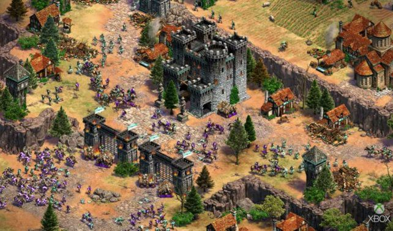

TECNOLOGÍA
Los gamers esperan el inminente
estreno del juego Age of Empires IV
El Age of Empire tuvo su estreno en el año 1997 lanzando un juego que se convertiría en el juego de
estrategia más vendido y famoso en el planeta

Jueves 01 de Octubre de 2020
Cada vez falta menos para el lanzamiento de Age of Empire IV Eso es lo único que
se sabe hasta el momento, pero no hay fecha oficial. Por ahora, los fans del juego
de estrategia siguen expectantes y ven cada movimiento que realiza Microsoft
y Relic Entertainment. Por ahora, solo hay un gameplay que deja dilucidar algunas
novedades que tendrá el nuevo juego de la saga, sobre todo a nivel gráfico.
El Age of Empire tuvo su estreno en el año 1997 lanzando un juego que se
convertiría en el juego de estrategia más vendido y famoso en el planeta.
Luego de ese momento, solo llegaron logros, expansiones y más de la saga. El
último lanzado, fue Age of Empire III, en 2005 y desde ese momento los adeptos al
videojuegos esperan a que la saga continúe.
Fue en 2017, cuando recibieron la noticia de que Microsoft anunció en la
Gamescom que habría un cuarto. Desde ese momento, volvieron a generarse las
ansias en los fans pero recibieron pocas novedades. Al corto tiempo se supo que
sería desarrollado por la prestigiosa Relic Entertainment, desarrolladora de juegos
como el reconocido Homeworld. Y, que sería editado por Xbox Game Studios.
Por lo que se sabe hasta ahora, el juego estará disponible solo para PC y
exclusivamente para Windows 10, y podrá ser adquirido por el Store de Windows.
Desde la compañía no hacen grandes anuncios, solo se sabe que el juego está en
el horno y que los trailers que circulan son solo imágenes pre-alpha (una versión
muy lejana a la final).
Sobre civilizaciones, facciones y en la época en que transcurrirá el juego, no
hay ninguna confirmación oficial. Solo hay conjeturas de los fans, como que en el
trailer se deja ver que habría una facción inglesa y otra mongola, pero son solo
suposiciones. Sobre la época en que se situaría, una frase del director creativo del
juego, Adam Isgreen, dejó lugar a la imaginación: “Inicio del Renacimiento”.
Por lo que se deja ver en los anuncios, los fans comenzaron a criticar que el juego
es “demasiado brilloso”. Pero desde la compañía, salieron a calmar las aguas
diciendo que el nivel de brillo solo es por la saturación del video y será regulable.